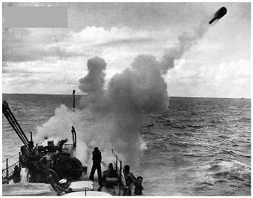
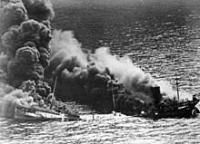

The Battle of Atlantic
The Battle of the Atlantic was a prolonged and crucial naval campaign fought from 1939 to 1945, as Nazi Germany sought to cut off Britain’s vital supply lines and starve the island nation into submission. With Europe under Hitler’s control, Britain depended on shipments of food, weapons, and resources from North America. This battle wasn’t just about naval supremacy—it was a fight for survival, one that would determine whether the Allies could sustain their war effort against Nazi Germany.
The German U-Boat Threat
The Germans deployed their deadly U-boat fleet in wolf packs to disrupt Allied shipping routes across the Atlantic. Commanded by Admiral Karl Dönitz, the Kriegsmarine waged a relentless campaign against convoys, sinking thousands of merchant ships and naval vessels. The Allies, in turn, implemented a convoy system, where warships escorted merchant vessels to protect them from submarine attacks. Despite these efforts, early in the war, the U-boats inflicted devastating losses.
Escalation and Civilian Hardships
As the war progressed, the Allies developed more effective countermeasures. The introduction of long-range aircraft, improved sonar, radar technology, and escort carriers helped detect and destroy U-boats before they could strike. Codebreakers at Bletchley Park also played a vital role by cracking German Enigma communications, allowing Allied forces to anticipate U-boat movements and avoid ambushes. Meanwhile, the civilian population in Britain endured rationing and shortages as a result of the German blockade, making the success of the convoys all the more critical.

Turning the Tide
Despite heavy losses, the Allies adapted quickly, improving convoy tactics, increasing escort ship production, and employing new weapons like depth charges. The turning point came in mid-1943 when the Allies gained the upper hand through intelligence breakthroughs and technological advances. Frustrated by the setbacks, Hitler failed to allocate sufficient resources to the Kriegsmarine, allowing the Allies to gradually take control of the Atlantic.
The Decline of the U-Boats
Despite their early successes, the U-boats suffered mounting losses. German submariners had to operate in increasingly hostile waters, while Allied forces improved their ability to detect and destroy enemy vessels. By 1945, the once-dominant U-boat force had been reduced to a fraction of its strength, and the Allies had secured control over the Atlantic, ensuring a steady flow of supplies for the final push against Nazi Germany.

Victory at Sea
The Battle of the Atlantic was the longest continuous campaign of World War II, and its outcome was pivotal. It ensured that Britain remained supplied, enabled the buildup for the liberation of Europe, and showcased the importance of intelligence, technology, and strategic coordination. This victory not only crippled Germany’s ability to disrupt Allied supply lines but also played a crucial role in the eventual defeat of the Axis powers.